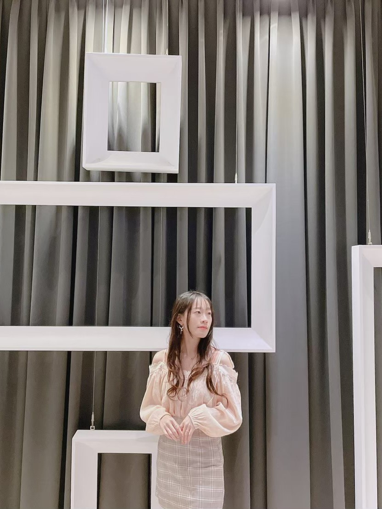
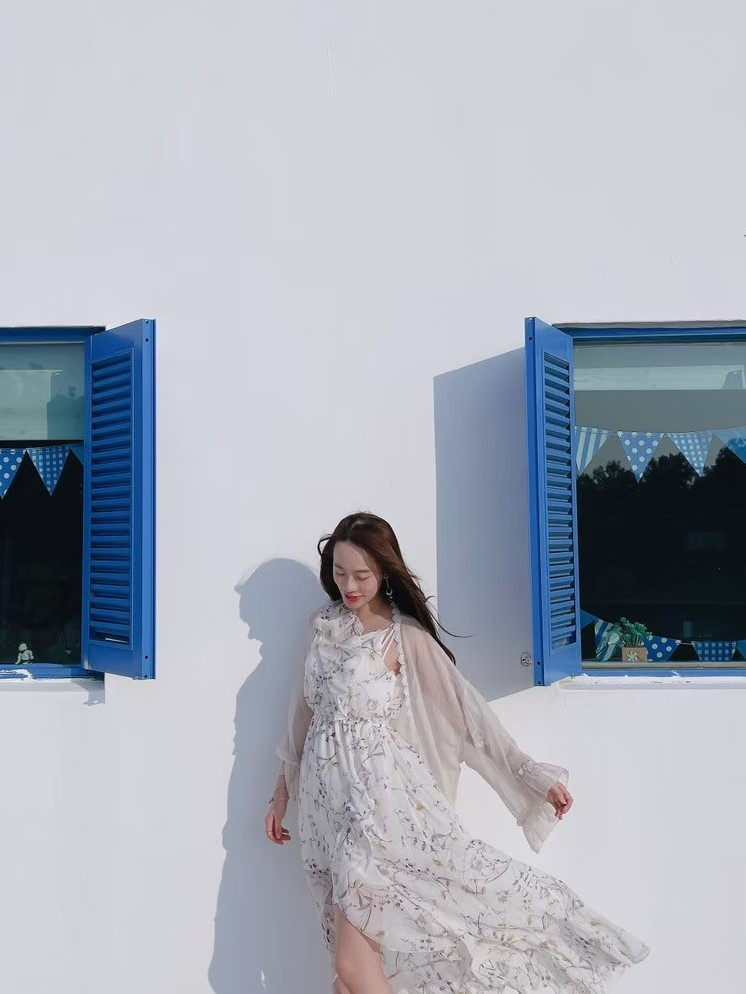

About Me
態度溫和喜愛挑戰新事物，擅於傾聽、文字撰寫、統籌、辦事效率佳，竭力達成目標、配合度高並有開放及彈性的態度。
我的個性
性情溫和但充滿衝勁，面對交付事項總是認真又踏實的去完成。


我的技能
HTML、CSS、Javascript、Illustrator、Photoshop、Adobe XD、Figma
自我介紹
結合溝通力、思考力、執行力於一身的女孩。
我是陳怡君，在努力不懈的堅持下，從社工轉職成為一名前端工程師，擔任前端工程師的歷程中總有許多困境與挑戰，但這些仍不足已澆熄我的熱情，反而更讓我熱衷的投入在網頁的世界之中。
發揮著設計+前端的知識，讓我在工作上更如魚得水。
工作經歷
博聯生技股份有限公司-前端工程師
2022.02-至今
1.優化公司後臺系統UI介面與UX體驗。
2.設計健檢預約系統與後臺介面，並使用VUE製作。
3.設計人事系統、履歷表、健檢相關問卷畫面並進行切版
4.撰寫系統使用手冊
互動網站UIUX養成班-學員
2021.08-2022.01
1.依UX規畫的使用者目標族群訂定網站視覺風格，以及目標。
2.前後端之功能架構及使用技術,應用Web前端技術開發互動式網站。
3.結合程式技術及資料庫設計建置建置一個擁有後台購物或搜尋系統的RWD網站。
4.擔任組長推動專題依照進度實現，完成熱銷排行、嚴選商品、咖啡課程、咖啡地圖，頁面切板與設計。